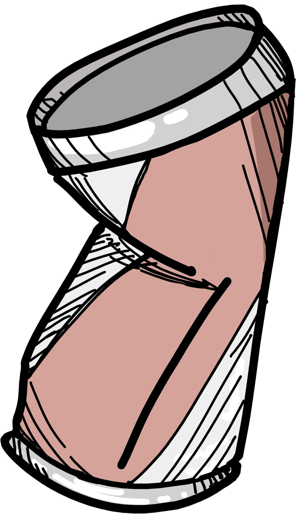

http://www.seoul.co.kr/news/newsView.php?id=20160511009005 (쓰레기 양)
http://www.ohmynews.com/NWS_Web/View/at_pg.aspx?CNTN_CD=A0002329282 (캠퍼스 낭만을 지켜주는 사람들)
http://news.jtbc.joins.com/article/article.aspx?news_id=NB11706961 (쓰레기 명시가 안되있다.)
http://www.seoul.co.kr/news/newsView.php?id=20161010010034 (불꽃놀이축제, 분리수거)
https://www.youtube.com/watch?v=lAhcUk5cEao (무단투기)
https://www.insight.co.kr/news/121552 (무단투기)
http://news.zum.com/articles/29984918 (쓰레기통 개수)
화려한 축제의 이면, 쓰레기
축제 후, 많은 쓰레기는 화려한 축제와는 다르게 축제의 부정적인 모습으로 항상 문제로 대두됐다. 100만명이 넘는 사람들이 방문하는 서울세계불꽃축제에서는 축제 기간동안 무분별하게 버려진 쓰레기를 처리하는데 드는 비용이 한 해 평균 1,554만원의 쓰레기 처리 비용이 발생했다. 매년 축제 후 한강공원을 뒤덮은 쓰레기더미가 시민의식의 부재로 지적되었다.
한강시민공원 월별 쓰레기 처리량
그래프를 보면 알 수 있듯이 축제, 행사 등이 적은 1-2월 달에는 쓰레기 양이 적지만, 날씨가 풀리며 축제가 많은 5-8월에는 쓰레기 처리량이 많은 것을 알 수 있다.
왜 문제야?
하지만, 사람들이 모이면 쓰레기가 많이 발생하는 것은 당연하다. 예를 들어, 위 사례처럼 100만명이나 되는 많은 사람들이 모였으니 많은 쓰레기가 발생할 수 밖에 없다. 그럼에도 불구하고 왜 이게 문제가 될까?


.png)

분리수거
가장 큰 문제 중 하나는 쓰레기가 분리수거가 안된 상태로 버려져있는 것이다. 분리수거가 안된 쓰레기의 경우, 나중에 분리수거 과정을 추가로 거치는데 축제같은 경우는 워낙 쓰레기양이 많아서 쓰레기를 수거하고 분리수거 하는데만 몇 칠이 걸린다고 하는데 분리수거만 잘되있어도 훨씬 쓰레기를 치우기 수월하다고 한다.

무단투기
또 다른 문제 중 하나는 무단투기이다. 자신이 먹고 놀았던 자리에 쓰레기를 그대로 두고 가는 것도 문제이지만, 쓰레기 배출 장소가 아닌 곳 구석이나 일부 전봇대에 버리는 것도 문제가 된다.
시민의식만이 문제?
완전한 답은 아닌 것 같다.
서울불꽃축제의 한 기사에서는 "음식물 쓰레기는 분리 배출 바랍니다"라고 적힌 입간판이 있었지만, 전체 높이가 사람 키와 엇비슷한 2m에 불과해 인파에 가려 안내문이 안 보이거나 입간판 자체가 사람에 밀려 땅에 넘어져 있기 일쑤였다고 하며 인파에 가려 쓰레기통이 어딨는지 모르는 사람들이 대부분이고 쓰레기통의 갯수도 규모에 비해 상당히 적었다. 심지어 있는 쓰레기통도 대부분 꽉찬 상태여서 대다수가 분리배출을 하기에는 힘든 상황이였다고 한다.
위 그래프는 서울시 쓰레기통 설치 현황으로 축제와는 별개일 수 있지만, 과거 1995년에는 7000여개가 있었지만, 현재는 5000여개이다. 여전히 쓰레기통이 부족하다는 민원이 들어오지만, 관리가 힘들다는 등의 이유로 설치에 소극적이다.
어떻게 해결해야할까?
이러한 요소가 쓰레기를 제대로 버리지않는 사람들의 낮은 시민의식에 대한 변명이 될 수는 없지만, 그래도 사람들 탓만 하기에는 정책적으로 아직 부족한 점이 있는 것 같다.
깨끗한 거리를 만들기 위해서는 시민의식의 개선과 축제 주최측의 쓰레기 관리를 위한 정책 등이 모두 개선되어야만 쓰레기 문제가 해소 될 것이라 생각된다.
참고자료 출처
http://www.seoul.co.kr/news/newsView.php?id=20160511009005 (월별 쓰레기 양)
http://www.ohmynews.com/NWS_Web/View/at_pg.aspx?CNTN_CD=A0002329282 (캠퍼스 낭만을 지켜주는 사람들)
http://news.jtbc.joins.com/article/article.aspx?news_id=NB11706961 (쓰레기통은 어디)
http://www.seoul.co.kr/news/newsView.php?id=20161010010034 (불꽃놀이축제, 분리수거)
https://www.youtube.com/watch?v=lAhcUk5cEao (무단투기)
https://www.insight.co.kr/news/121552 (무단투기)
http://news.zum.com/articles/29984918 (쓰레기통 개수)